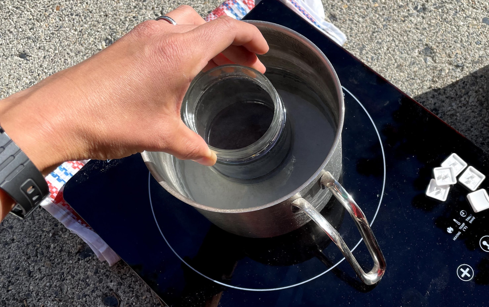

Small-batch keyboard gradients: how to dye keycaps at home if you really have to
Like any good cooking blog, here’s the link to jump to recipe.

I found myself here because I use Kailh Choc switches on my One True Ergonomic Mechanical Keyboard, the Corne LP. The Choc switches have a unique shape like an American wall outlet and thus are only compatible with weird American plug-shaped keycaps. Choc keycaps seem to only come in black and white, which misses out on the fun customisation the rest of the mechanical keyboard world enjoys. MKUltra batch dyes Choc-compatible keycaps but it’s usually out of stock and the shades are more crayon-like than I’d prefer.
If you are reading this, you may have fallen into the same dark rabbithole of mechanical keyboard customization as I have, and if a primal urge haunts you to bring the non-commercially produced palette of your dreams into the light of reality then take solace: I have studied the reddit and discord lore, tried it for myself, and have distilled the wisdom from the internet and my own experience into this handy document.
Note that my process involved elaborate backflips to make a gradient from the three primary colours while trying to minimise waste and work around COVID supply chain issues. You may be able to skip some steps by buying more dyes.
An outline of the steps I took:
>Assemble the tools
I spent a couple of weeks passively accumulating these things. You could probably do it faster if you didn’t stubbornly aim to fish them out your house recycling bin like I did.
-
White PBT keycaps- Keycaps are made with plastic, either with ABS (lower melting point) or PBT (higher melting point). I used PBT here, I heard that ABS will deform in the boiling dye bath.
- Note that finger oil or UV damage from older keycaps can cause irregularities. I used newish secondhand keycaps and it is only noticable up close.
- If you’re buying new keycaps for this, might as well get extras in case you goof or want to experiment with colours. I did not have extras, so it was a measure thrice, cut once kind of deal.
-
iDye Poly, a plastic dye. Make sure to get the Poly version, the iDye Natural will not work on plastics.- I got the three primary colours Blue, Yellow, and Red because colour theory would lead me to believe that I could get all of the colours for the price of 3. Pigments, unlike digital pixels, cannot actually mix into literally every colour, so if you go with this approach be sure to know its limitations. For example, if you want pink caps, you may want to get a pink dye.
- Support your local art supply store! Otherwise this is a good online source.
- I have read in older tutorials that Rit Dyemore (another plastics dye) doesn’t work as well. Have not confirmed personally.
-
Small jars with lids, or ziplocks, for storing extra dye power.- iDye Poly comes as a powder in a dissolvable pouch meant to be tossed entirely into a buck to dye heaps of fabrics, so for a handful of keycaps you don’t need very much of it.
- I find that containers much easier to use than plastic ziplock bags because they stay upright and are easy to pour from. If you use ziplock bags, you may need a plastic spoon to get small amounts of powder out.
-
Glass jarsfor mixing dye colours and dying, if you don’t want to ruin a cooking pot.- If you don’t care about ruining a cooking pot, note that you’ll have to thoroughly wash the pot between each dye colour, potentially with bleach (according to some sources). I used the glass jars tactic to avoid this hassle.
-
Small potfor boiling water.- it just needs to be big enough to fit a glass jar from step 4 above.
- I boiled water in this pot, and placed the glass jars of dye into the boiling water to heat it. The dye does not contact the pot, so it continues to be food-safe.
-
Chopsticksor other way to fish the keycaps out of the dye. Maybe a plastic takeout spoon would work too. I saw internet advice that metal should be avoided as it may cause scratches. -
Distilled, filtered, or otherwise non-shitty water- The tap water where I live is really gross in the winter and precipitates white flecks when boiled. The flecks will stick to your keycaps and cause weird discoloration.
-
Rags or paper towelsfor the inevitable mess -
Gloves, if you don’t want your hands to get smelly and colourful -
Non-food-safe containerfor rinsing. As to not sacrifice a pot forever you could use a yogurt container or paint water can or hair bleach bowl or anything you never plan to eat out of again. -
Induction cooktop/hot plate (optional).- The hot dye smells bad so I took it outside. If you have a fume hood, that might be sufficient.
-
Stopwatch (optional). For science.
>Make a plan
If your keys are not interchangable, and you want to make a gradient with many colours, then you need a plan. For example, on my keyboard, all keys are interchangable except the 2 homing keys (keys with bumps so you know where to place your hands without looking) which are always at the F and J position (in QWERTY), and two 1.5u sized keys that always go at the thumbs:
I photoshopped some prototypes to get a feel for what colour scheme I liked (very rudimentary, I did this on my phone):
I traced my keyboard on paper and drew out the keys, using colored pens to mark which keys would be which colour group based on the prototype:
And then I PHYSICALY placed keycaps onto my drawing, making sure to put the special keys (homing keys and thumb keys) in their exact positions. Then I removed the keys by colour group, placing them physically together, and annotating which group they were in:
Most of this planning is probably overkill for most people, but because I didn’t have any extra keycaps and also was making a colour scheme where the homing keys needed to be in a specific position, I did not want to make any mistake. Use whatever strategy works for you!
>Dye the keycaps
>Preparation
From my hair dying experience I went into this first by putting on plastic gloves with towels ready.
-
Carefully cut the dye packets and poured them into the small containers (or ziplocks). I suggest you do this in a sink or bathtub because it could go catastrophically wrong. Make sure the containers are dry!
-
If your keycaps are used, wash them in soap. If they are new, maybe wash them anyway, who knows where they’ve been.
-
Fill the food-safe pot with water and set it aside to boil on the hotplate.
-
Fill the non-food-safe rinsing container with water and set it next to the boiling pot.
>Mix the colours
I mixed the colours in the glass jars one at a time, since I was learning on the fly.
-
Pour a small amount of water into the glass jar until it could cover all the keys you plan to dye at once, that’s all you need. I was dying 6 keys at time, so I used very little water.
-
Add a pinch of dye powder into the water (a metaphorical pinch. I would not actually touch the powder with my hands). If you want pastels, you need to REALLY dilute the colours. I mean really seriously dilute them. Because I was mixing in such small jars, I barely needed to use a dusting of powder. It’s better to dye the keys too light than too dark, because you can still fix your mistake. Imagine you’re putting habenero sauce or sichuan chilis into a soup. That’s right. You’re playing with fire.
-
Put the glass jar of dye into the pot of boiling water, wait a bit for it to heat up. Stir it with chopsticks. I didn’t want to ruin my cooking thermometer so I didn’t measure how hot the dye got, but I’m guessing it was nowhere near boiling since I didn’t scratch my keys like others reported when things got close to the limit. To complicate things further, I live at elevation so water boils at a lower temperature (92c/200f instead of 100c/212f), so I couldn’t get it as hot as yall can at sea level anyway. Luckily, none of this seemed to matter in the end. Do not leave glass jar unattended, the boiling water bubbles might flip it.

>Put the caps into the dye
-
When the dye seems warm enough or has been sitting in the boiling water for a while, drop your keys in. Be sure you have a plan on how you’re going to get the keys out first, and if you made a dying plan, double check that you’re dying the correct keys. Start the stopwatch. Check the colours progress of the keys every 30-60 seconds. I did this by picking one out with chopsticks and rinsing it in the other container to check its true shade, and tossing it back in if needed. If you’re going for pastels, you may want to check more often as to not overshoot. The keys I made took 2-4 minutes to get to the desired shade. One experimenter’s chart seems to show that colder temps for longer periods makes more pastel-like colours. In my experience the diluteness of the dye seemed to matter the most.
-
When the colour looks right, take all the keys out and dunk them in the rinsing container. I took them out with chopsticks individually, but you could also pour them out into a mesh drainer over the sink. I did not do this because I didn’t want to sacrifice the food-safety of a mesh drainer, and I didn’t want to dye my sink with hot dye. Do what feels right to you.
-
Once in the rinsing bowl, rub each key with gloved hand to get extra residue off. I’ve seen people running their keys under cold water, though the rinsing bowl worked fine for me. I noticed the keys get ever so slightly darker after being rinsed and sitting around to dry. Maybe it’s a trick of the light? If you want pastel keys, I would take them out of the dye when they’re slightly lighter than you want them.
-
Lightly dry keys with towel and place it on the corresponding positions on your dying plan paper. I liked doing this as I went through each colour so I could see the keys in context, in case I needed to darken the colours to get a better match.
-
Repeat with other key colour groups.
-
When you have all the keys dyed, inspect the gradient to see if there’s any corrections you want to make. You can only make keys darker at this point.
>Results
You did it! Make sure keycaps are completely dry before putting them back on the keyboard. Take a victorious photo. Take a selfie. Tell your friends about it.
Hot tip: wait until dyes are cooled before pouring down the drain. They’re more likely to stain when hot. I poured it down the bathtub drain because the hole is bigger.
Putting my face close to my newly dyed keys, I can definitely tell they are DIY. There are spots on the bottom or side of keycaps that don’t take colour at all or at the same rate as the rest of the surface, I am guessing it’s a relic from the manufacturing technique?
I also wish I had gotten a more sky blue rather than a dark blue, but that was the first colour I tried and now I know it was insufficiently dilute. The dyed keys look matte rather than shiny as ABS keys are, almost as if painted by watercolour, which is kind of neat if unorthodox.
Was it the best use of my time spending hours supervising a boiling pot? Maybe not. Was it relaxing as heck sitting in my front yard listening to podcasts? Heck yeah. Overall, the keyboard cuteness has increased. And it’s been a long time since I’ve let myself indulge in grotesquely unviable hobby ventures!

Okay so. How did it go for you?? I’m curious to hear your experiences and see your results. Is there a good dying resourced I missed? A piece of reddit lore overlooked? Let me know in the comments below, or on discord or twitter or something.
The nice thing about saving the extra dye power is that now I can dye more keys in the future. [OMINOUS MUSIC, DISTANT SCREAMING]
Comments
No comments at the moment. Hey, you could write one \o/